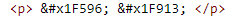
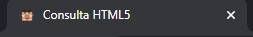
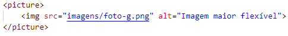

Nesse site posso ver tudo aprendizado e como aplicar
Para colocar um título em uma página basta basta digitar <h1>, veja o ex:
Além disso os títulos vão de H1 até H6
Para colocar um parágrafo basta digitar <p>, veja o ex:
Também podemos quebrar linhas com a tag <br>
Para adicionar símbolos especiais basta digitar "&" e escolher o símbolo que deseja, aqui estão alguns exemplos:
® © ™ € £ ¥ ¢ δ ↑
Para adicionar um Emoji na sua página basta procurar o código do emoji clicando aqui, ex:

🖖 🤓
Para adicionar um Favicon basta digitar link:favicon na aba head do código e depois, na parte de "href", usar
a tecla de atalho CTRL + Space para selecionar o arquivo de sua preferência.
Você pode criar um favicon clicando aqui ou pode procurar um favicon pronto, clicando aqui. Exemplos:

Para criar uma lista ordenada basta digitar <ol> e colocar os itens da lista dentro de <li>, exemplo:
Passo a passo do aprendizado:
Para criar uma lista não ordenada basta digitar <ul> e colocar os itens da lista dentro de <li>, exemplo:
Ferramentas para aprender:
Para criar um Link basta digitar <a>, inserir o código da url em "href", e digitar o texto linkado, exemplo:
Existem alguns comandos que auxiliam o link como por exemplo a o target="_blank" esse comando define
que o link será aberto em uma nova página e o rel="external" vai comunicar ao navegador que o link é de um site externo, ex:
Para criar um link de download basta inserir a tag "download" dentro de <a> e inserir o tipo de arquivo que está sendo disponibilizado em "type", ex:
Link para DownloadNesta frase tenho um Termo em destaque usando a tag <strong>
Nesta frase, temos um Termo de ênfase usando a tag <em>
Podemos criar também um texto marcado usando a tag <mark>
Estamos criando um Texto Grande e um Texto Pequeno nesse parágrafo <big> e <small> respectivamente.
Podemos marcar Um texto como excluído para indicar que ele dever ser lido, mas não considerado <del>
Podemos marcar um texto como inserido para dar uma ênfase e indicar que ele foi adicionado depois <ins>
Para inserir coisas do tipo x 20+3 <sup>
Para inserir coisas do tipo H 2O <sub>
O comando document.getElementById('teste') é escrito em linguagem JavaScript <code>
num = int(input('Digite um número'))
if num % 2 == 0
print(f'O numero {num} é PAR')
else:
print(f'O numero {num é IMPAR'}
print('Fim do programa')
O comando <pre> serve para formatar as linhas
Como diria o pai de um amigo: o computador é muito burro muito rápido
<q>
Seundo Jeff Noble, no seu livro HTML para leigos:
A diferença entre elementos inline e um bloco de texto é importante. Os elementos HTML neste capítulo descrevem os blocos de texto. <blockquote>
Estou estudando HTML e CSS . Estou adorando!! <abbr>
Estou aprendendo a criar coisas em HTML.<bdo>
Aqui está um tutorial passo a passo de como redimensionar imagens com a ferramenta GIMP
1- Primeiro, você irá selecionar a imagem que deseja redimencionar e abrir com o GIMP

2- Segundo, você vai até a aba "imagens" e aperte na opção "redimensionar imagem" como no exemplo.

3- Terceiro, você irá selecionar o tamanho da imagem que desejar e ajustar a resolução.(lembre-se de que quanto maior for o tamanho do arquivo de imagem, mais pesado será seu site)

4- Quarto, despois de escolher o tamanho da imagem, você terá que salvar o arquivo, segue o exemplo:

5- Quinto, nesta aba você escolherá o nome do arquivo e a pasta que o deseja salvar.

6- Sexto. Por fim , você escolherá a qualidade da imagem(sempre lembrando do ensinamento da imagem 3) e em seguida clicar em exportar.

Resultado da Imagem redimensionada

Para inserir uma imagem no seu site basta digitar o comando <img>.Depois disso você vai selecionar
sua imagem(que está dentro da sua pasta junto com seu documento HTML)
apertando as teclas
"Ctrl + space" e em seguida vai adicionar uma descrição para a imagem dentro do parâmetro "alt"
, exemplo:

O site deve se adptar para cada dispositivo que tentar acessalo e para isso da para criar imagens dinâmicas que se moldam conforme a tela do usuário
1- Primeiro, você vai redimensionar 3 imagens diferentes no GIMP como foi ensinado na parte anterior como essas:
2- Agora vamos para o código, a tag <img> ficará dentro da tag <picture> e você irá adicionar
a maior foto que você redimensionou por primeiro, assim :

3- Após isso, você irá utilizar uma nova tag no lugar de img. A nova tag é <source> e dentro dela você irá
adicionar as imagens
em uma escala de maior para a menor.
Dentro de "Source" você irá adicionar 3 paramentros. O primeiro parametro é "(max-width: px)" na qual você irá colocar o máximo de pixels para a imagem reduzir(coloque sempre um pouco a mais que a primeira imagem que está dentro de picture)
em seguida, você ira inserir o parâmetro src que é para selecionar a imagem desejada e por fim você irá colocar o parâmetro type que vai informar ao navegador o tipo de imagem está sendo mostrada, segue o exemplo:

Nesta está limitada a 1050px pixels e 750px, pois o tamanho da imagem g é 1000px e da segunda imagem m é de 700px(no parametro media sempre coloque um pouco mais do que o máximo)
Vamos aprender a colocar um audio na página
Para isso você vai utilizar o comando <audio> e em seguida digitar mais dois parametros dentro de audio, o controls que vai adicionar o play para o audio e o comando autoplay que vai fazer sair som automatico ao usuário entrar na página(só funciona em alguns navegadores)
Para inserir videos basta colocar a tag <video> e dentro de "src" você seleciona o arquivo de vídeo.
Depois você irá adicionar mais dois parâmetros, o controls novamente e o "width" que irá redimensionar o tamanho que o video é exibido em sua página
Para inserir um vídeo do youtube direto no seu site basta seguir os passos abaixo:
1- Depois de escolher o video que deseja, vá até a aba compartilhar.
2- Em seguida clique em "Incorporar".
3- Agora copie o código do vídeo que irá aparecer:
4- Por fim, cole o código do vídeo no seu bloco de códigos.
Lembrando que as tagas "width" e "height" servem para redimensionar o video na sua página